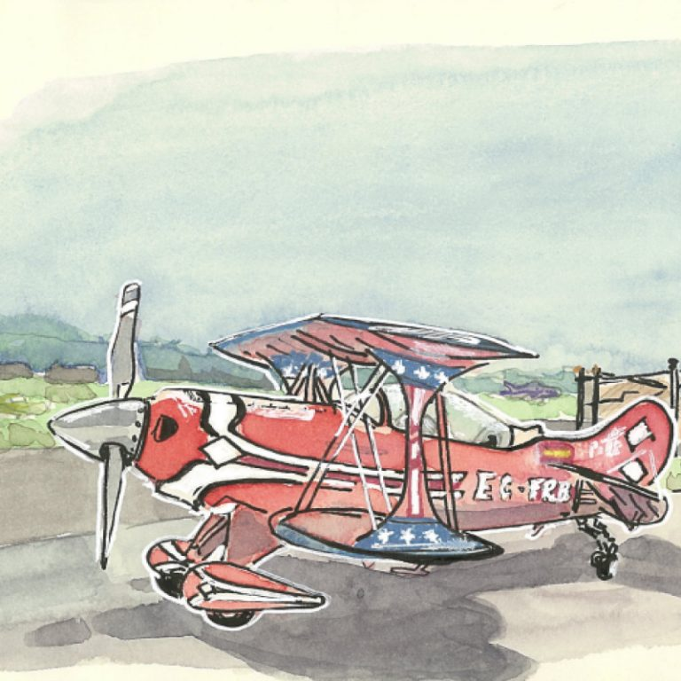
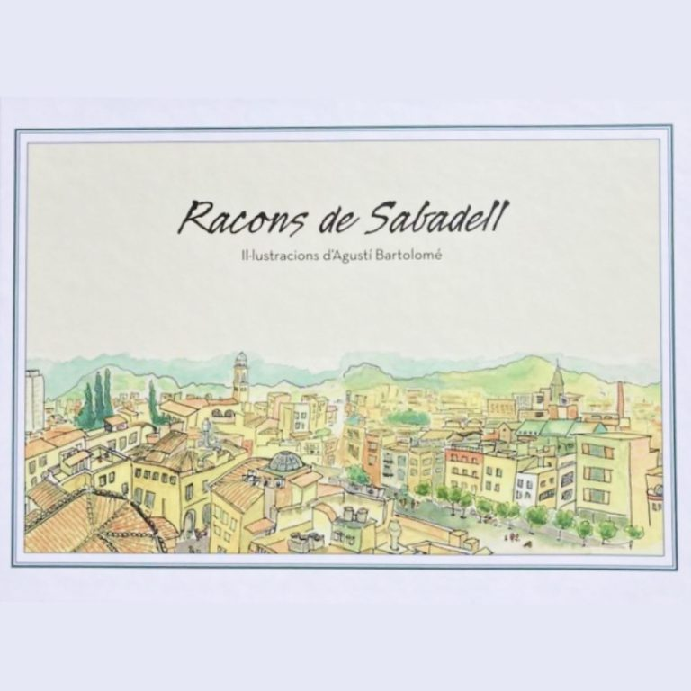
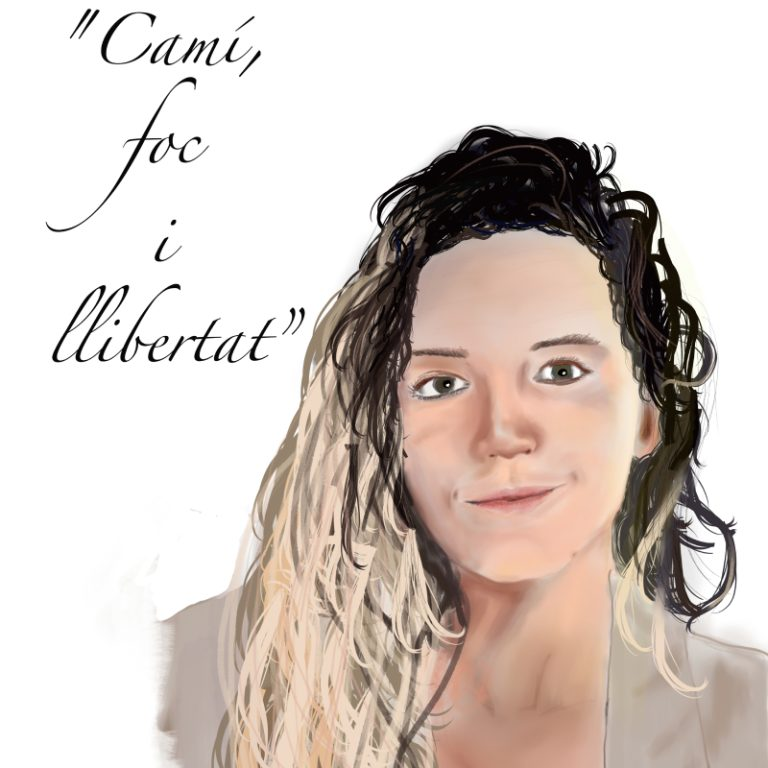
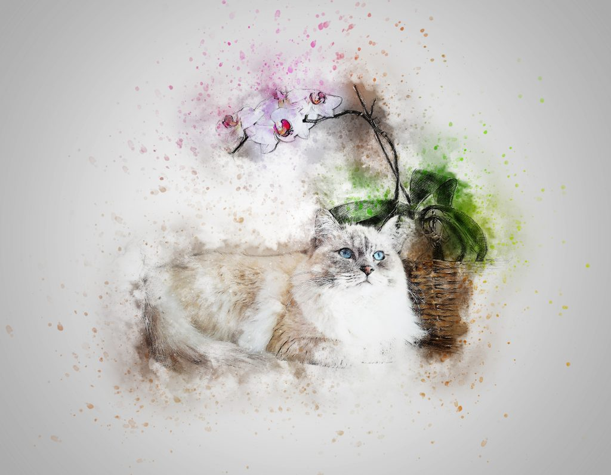
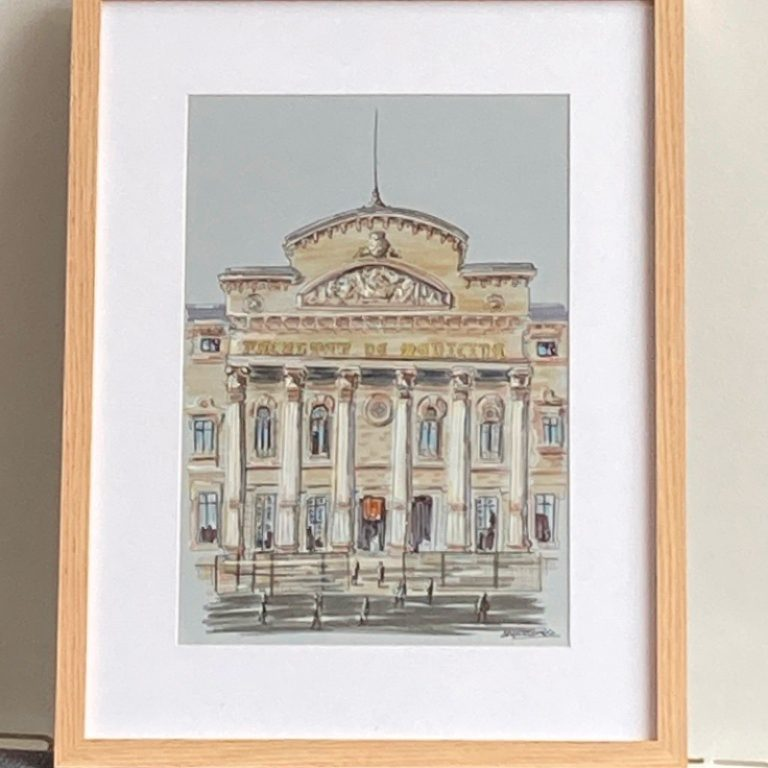
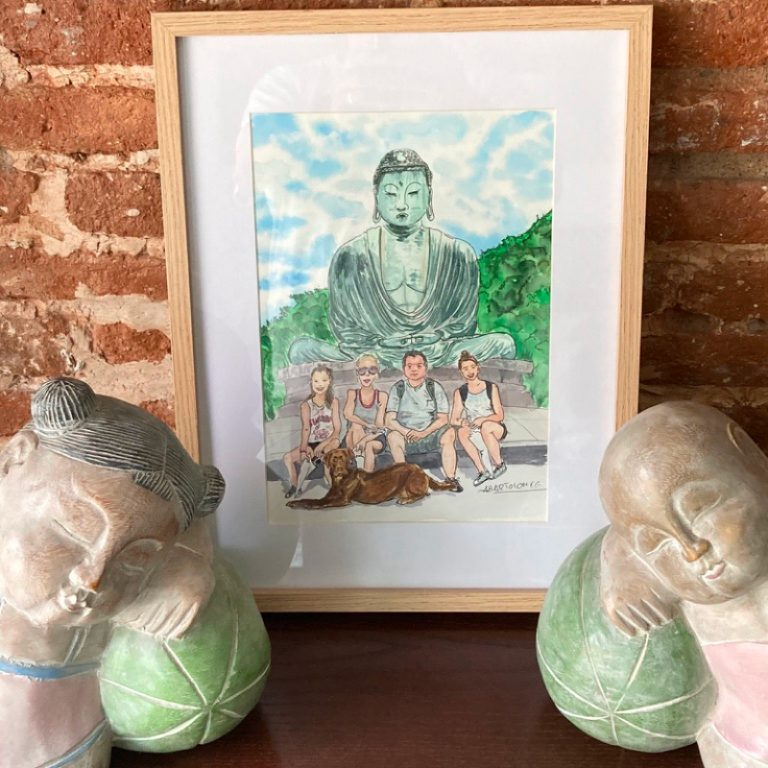
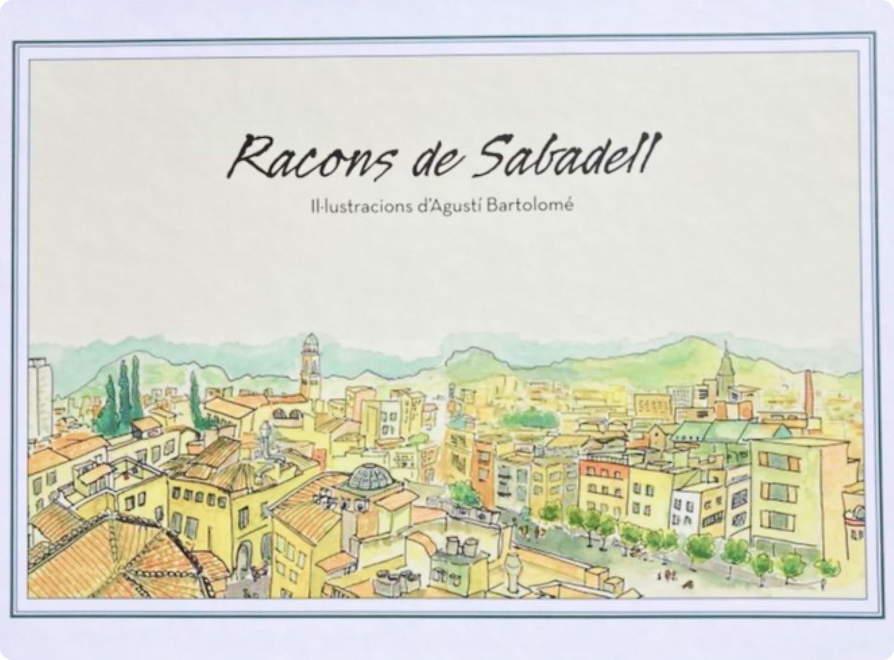
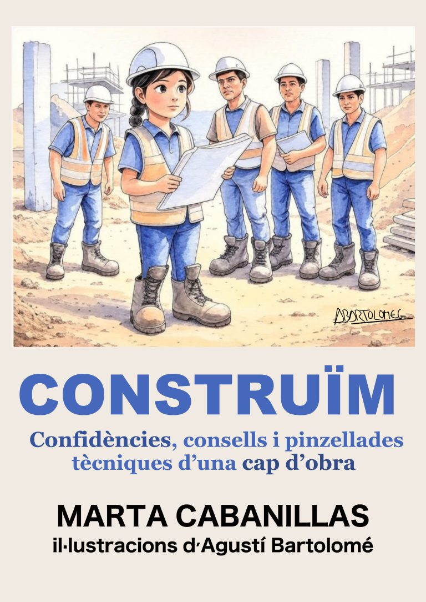
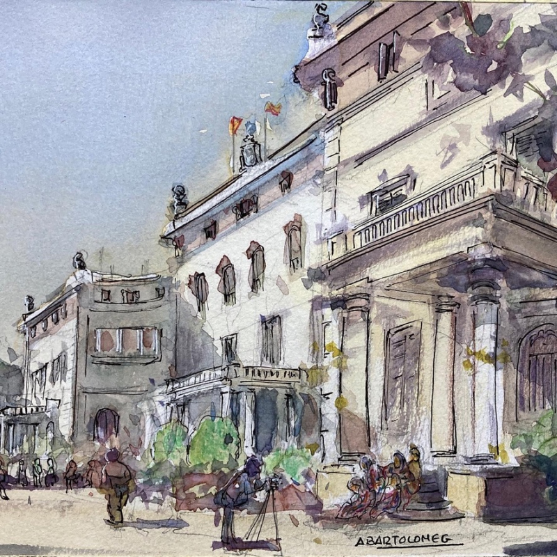
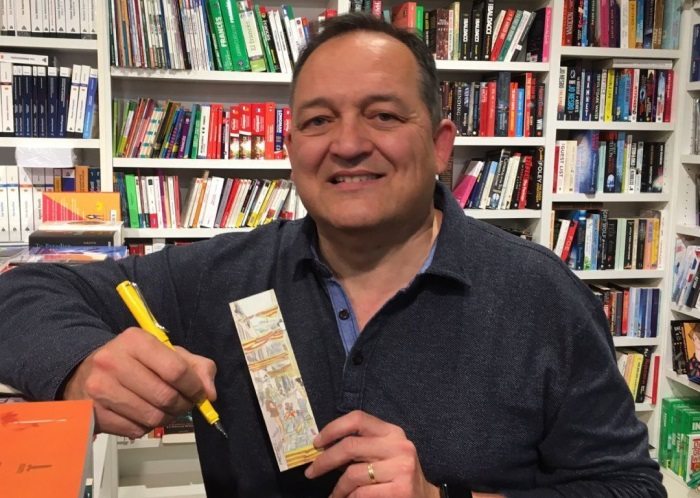

Libros e ilustración editorial
Imágenes para acompañar historias y dar forma visual a las ideas de autores y editoriales.
Soy Agustí Bartolomé, ilustrador y urban sketcher en Sabadell. Creo ilustraciones para libros y proyectos, retratos personalizados y talleres para aprender a dibujar con confianza.

Del dibujo urbano a la ilustración editorial y los encargos personales: cada proyecto tiene su propio lenguaje y una historia que contar.

Imágenes para acompañar historias y dar forma visual a las ideas de autores y editoriales.

Ilustraciones creadas para convertir personas, recuerdos y momentos especiales en piezas únicas.

Retratos que buscan capturar el carácter y la personalidad de esos compañeros tan especiales.

Ilustración aplicada a campañas, celebraciones, entidades y proyectos culturales.

Imágenes pensadas para comunicar, regalar y conservar.
Cuadernos, lugares y escenas que cuentan la identidad de cada ciudad.
He colaborado en libros propios y de otros autores, desde la portada hasta las ilustraciones interiores.

Un recorrido ilustrado por rincones representativos de la ciudad, reunidos en un libro de 80 páginas.
Libro ilustrado por Agustí Bartolomé.

Confidències, consells i pinzellades tècniques d'una cap d'obra, de Marta Cabanillas. Portada, contraportada e ilustraciones interiores.
También he ilustrado No es No, de Ángeles Mañas, y colaborado en publicaciones y proyectos locales.
En mis clases no venimos a borrar: venimos a probar. Trabajamos paso a paso para aprender a observar, encajar las formas y disfrutar del dibujo sin miedo a equivocarnos.


Soy ilustrador y urban sketcher desde Sabadell. Me interesa observar los detalles de los lugares, las personas y las historias que nos rodean, y traducirlos en imágenes con carácter propio.
Mi trabajo abarca ilustración editorial, encargos personalizados, retratos de mascotas, colaboraciones institucionales y formación en dibujo. También participo en encuentros de urban sketchers y proyectos culturales.
Combino mi experiencia profesional con una manera cercana de trabajar: escuchar qué necesita cada proyecto, encontrar el enfoque visual adecuado y cuidar los detalles.
Cuéntame tu ideaSi necesitas una ilustración, quieres encargar un retrato, estás preparando un libro o buscas información sobre los cursos, escríbeme. Lo hablamos sin compromiso.